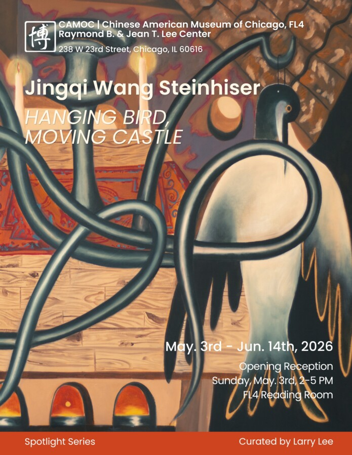

HANGING BIRD, MOVING CASTLE
Hanging Bird, Moving Castle opens this May at the Chinese American Museum of Chicago. This new body of paintings traces shifting states of memory, migration, and inner transformation: where fragile figures, suspended forms, and imagined architectures drift between stillness and motion. The works reflect on what it means to inhabit multiple cultural and psychological spaces at once, holding tension between grounding and displacement. It feels particularly meaningful to present this work within Chinatown, where layers of history, community, and diasporic identity resonate deeply with the themes of the exhibition.
The exhibition is presented as part of the museum’s Spotlight Series and coincides with AAPI Heritage Month, a time to recognize and celebrate Asian American and Pacific Islander histories, voices, and artistic contributions. It also takes place during Chicago Expo Art Week, when the city becomes a vibrant meeting point for artists, curators, and audiences from around the world.
You are warmly invited to join the opening reception on May 3rd in Chinatown. Come experience the work in person, connect with the community, and take part in a moment of gathering and reflection during an especially dynamic time in Chicago’s cultural calendar.
Opening Reception: May 3
Location: Chinese American Museum of Chicago, Chinatown